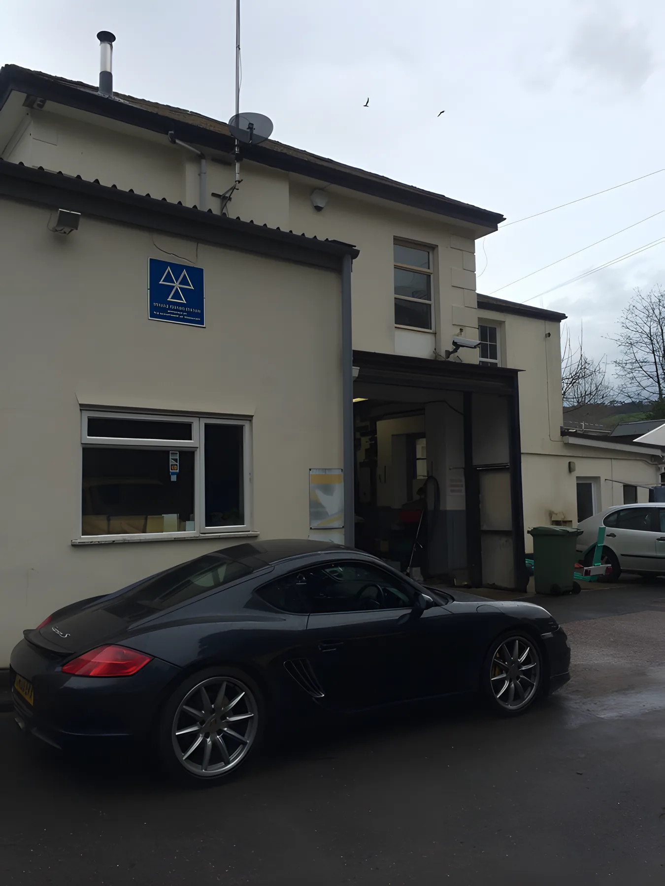

A grass roots garage
Here at Coombe Vale Garage we're a real grass roots garage, and our staff are professional mechanics. We see all manner of cars and issues, and we enjoy the relationship we build with our customers.
Our customers enjoy a better level of trust with us. We're members of the Good Garage Scheme and we're known locally as a trustworthy garage. You'll find us friendly and easy to deal with, and there are no hidden extras.
We love our garage business, and you'll soon see why.
